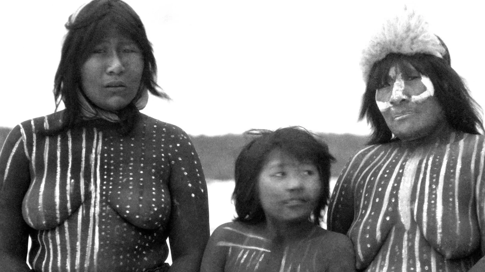

Patricio Guzmán'ın yönettiği 2015 yapımı Sedef Düğme (El botón de nácar), Şili'nin güneyindeki Patagonya coğrafyasını ve Pasifik Okyanusu'nu bir tarih belleği olarak ele alıyor. Film; bölgede yaşayan yerli halkların dünyası, sömürge döneminde yaşananlar ve Pinochet diktatörlüğü sırasında okyanusa bırakılan kayıplar arasında bağ kuruyor.
Guzmán anlatısını suyun çevresinde örüyor: okyanus hem yaşamın kaynağı hem de farklı dönemlerde yaşanan şiddetin izlerini taşıyan bir tanık hâline geliyor. Başlıktaki düğme ve filmdeki başka küçük izler, büyük tarihsel anlatıları tek tek insanların hayatlarına yaklaştıran birer başlangıç noktası olarak kullanılıyor.
Bu yapım, kronolojik bir tarih dersi ya da hızlı tempolu bir araştırma filmi bekleyenlerden çok, görüntü ve düşünce arasında yavaşça ilerleyen şiirsel belgesellere açık izleyicilere hitap ediyor. İzlerken Şili tarihinin yanı sıra kimin hikâyelerinin hatırlandığını, kimin sesinin anlatı dışında kaldığını da düşündürüyor.